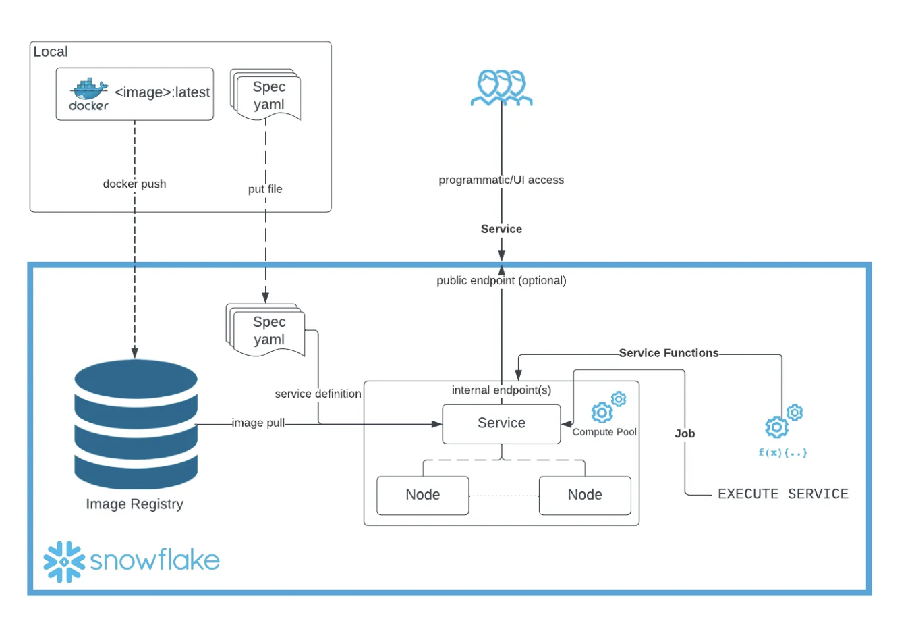
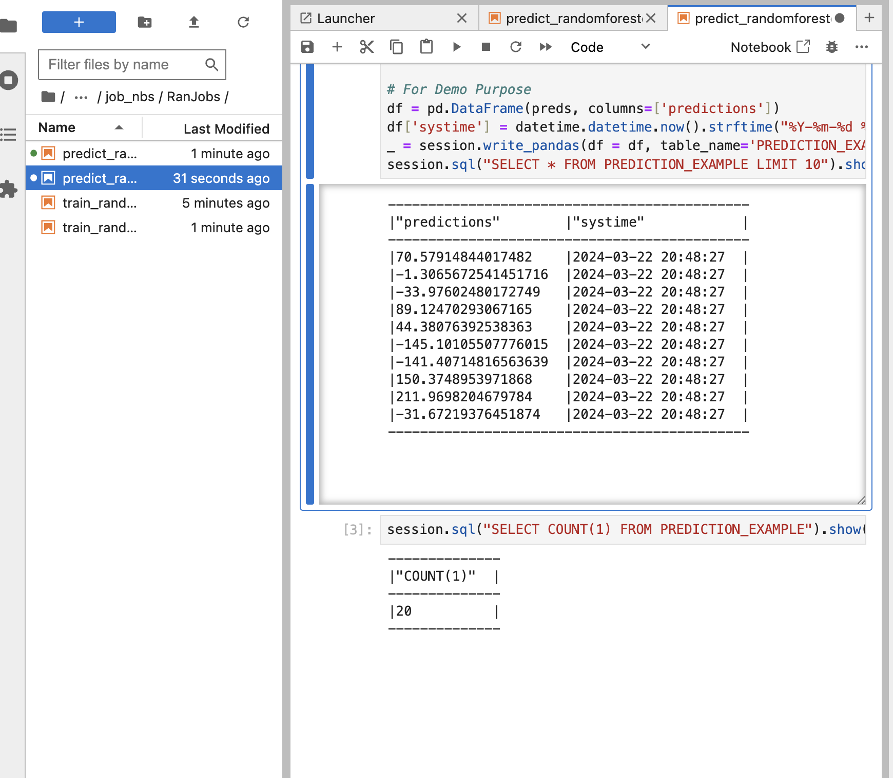

! conda create --name snowpark --override-channels -c https://repo.anaconda.com/pkgs/snowflake python=3.10 --y; conda activate snowpark; pip install --upgrade pip setuptools wheel; pip install -r ../infra/requirements.txtJupyterLab In Snowflake With SPCS
You can go directly to this github and run this locally and follow along for the best results. If you run into errors please leave comments and I will do my best to get to them and make changes as necessary.
Introduction
Welcome to my first article series on Snowflake! I hope you find it helpful and insightful for understanding how the Snowflake platform can be leveraged.
You can follow the most up-to-date version of this development series at this GitHub repository. The branch name for this part will be origin as it contains the latest version of these tutorials. Ensure you check out the correct branch name to follow along.
What?
Snowpark Container Services is a fully managed container offering that allows you to easily deploy, manage, and scale containerized services, jobs, and functions, all within the security and governance boundaries of Snowflake, and requiring zero data movement. As a fully managed service, SPCS comes with Snowflake’s native security, RBAC support, and built-in configuration and operational best-practices.
In this tutorial SPCS addresses a gap in Snowflake’s offerings a development space for data scientists that isn’t available out of the box. Although Snowflake notebooks are on the horizon, as seen here, they are not yet generally available. In the meantime, SPCS provides an effective solution that includes the ability to use git read/write capabilities. Snowflake recently introduced read-only Git integrations, but write capabilities are actively being developed. SPCS also allows you to bring your own libraries, including those not supported within the Snowflake ecosystem. By creating an image with the necessary tools and installing the Git integration of your choice, you can interact with your Git repository directly inside Snowflake. This capability is transformative for data scientists and machine learning engineers working securely within the Snowflake ecosystem.
How?
Through the power of Snowpark Container Services (SPCS), we can now work on our preferred platform Snowflake while maintaining the flexibility we desire. This series will unveil the seemingly endless possibilities with Snowflake.
Our Docker image will include persistent volumes that provide read and write access to internal stages within Snowflake. This setup allows you to log into your secure Snowflake ecosystem, pull your repository, and develop using the various compute layers offered by Snowflake. Whether your development requires large compute pools or GPUs, Snowflake’s elastic compute layer can accommodate these needs seamlessly and swiftly.
Note: Many talented individuals and companies are already making significant advances with this technology. It’s important to clarify that this is just one approach to get started.
Why?
With over 8 years of experience as a Data Scientist and Machine Learning Engineer, I’ve always sought to manage all our needs directly within Snowflake. Thanks to Snowpark Container Services (SPCS), this is now feasible without needing to switch platforms. My approach is greatly influenced by the notebook development methodology popularized by Fast.ai through nbdev, and you’ll see a Jupyter Notebook-first approach throughout this series.
Jeremy Howard has been an invaluable mentor to numerous prominent open-source developers, and I extend my gratitude to him for his contributions to the community. While you may not align with this development strategy, remember that it is flexible. If you prefer a different IDE, you can modify the Docker image to support Visual Studio Code and continue your work there. Initially, our setup will support Python in Jupyter Lab, but it is designed to be adaptable to other programming environments such as R Studio, Scala, or any other language that fits your development preferences.
Youtube Walk Through
In This Example:
This GitHub repository demonstrates a basic yet complete CI/CD process centered around Snowflake. The GitHub Action in this repo conducts both training and inference of a model sequentially. However, the idea is to schedule your inference or training with any tool. You can use the Snowflake Labs action here, but I had already developed the one used in this repo before its release—feel free to adjust as needed.
In future articles, we will explore Snowflake’s ML capabilities and add them to this series. Features will include native Snowflake preprocessing, a feature store, machine learning modeling, model registries, model management, Cortex baseline models, and more. Make sure to return to see how this series evolves.
Task Example of Executing Docker Image
Here is an example of what this would look like as a task.
create or replace task DEMO_TASK_1
USER_TASK_MANAGED_INITIAL_WAREHOUSE_SIZE = 'XSMALL'
SCHEDULE ='180 minutes'
as
EXECUTE SERVICE
IN COMPUTE POOL CONTAINER_DEMO_POOL
FROM SPECIFICATION $$
spec:
containers:
- name: modeling
image: sfsenorthamerica-demo-jdemlow.registry.snowflakecomputing.com/container_demo_db/public/image_repo/modeling
env:
SNOWFLAKE_WAREHOUSE: CONTAINER_DEMO_WH
NOTEBOOK_FILE: "nbs/99a_train_randomforest.ipynb"
command:
- "/bin/bash"
- "-c"
- "source /opt/venv/bin/activate && { datetime=$(date +'%Y%m%d_%H%M%S'); jupyter nbconvert --execute --inplace --allow-errors --ExecutePreprocessor.timeout=-1 --NotebookApp.token='${JUPYTER_TOKEN}' ${NOTEBOOK_FILE} --output=executed_${datetime}.ipynb; }"
volumeMounts:
- name: juypter-nbs
mountPath: /home/jupyter
networkPolicyConfig:
allowInternetEgress: true
volumes:
- name: juypter-nbs
source: "@volumes/juypter-nbs"
uid: 1000
gid: 1000
$$Set Up For Code Walk Through
Prerequisites
Installed IDE of choice (Vscode, Pycharm, Intellij, etc), but will be showing VSCode.
Package Manager of your choice, but in this tutorial we are using miniconda installing instructions below.
Install Miniconda Script
#!/bin/bash
set -e
set -x
cd
case "$OSTYPE" in
darwin*) DOWNLOAD=https://repo.anaconda.com/miniconda/Miniconda3-latest-MacOSX-x86_64.sh
;;
linux*) DOWNLOAD=https://repo.anaconda.com/miniconda/Miniconda3-latest-Linux-x86_64.sh
;;
*) echo "unknown: $OSTYPE" ;;
esac
case "$SHELL" in
/bin/zsh*) SHELL_NAME=zsh ;;
/bin/bash*) SHELL_NAME=bash ;;
*) echo "unknown: $SHELL" ;;
esac
cat << EOF > .condarc
channels:
- conda-forge
- anaconda
- defaults
channel_priority: strict
EOF
wget $DOWNLOAD
bash Miniconda3-latest*.sh -b
~/miniconda3/bin/conda init $SHELL_NAME
rm Miniconda3-latest*.sh
perl -n -e 'print if />>> conda/../<<< conda/' .bashrc > .condainit
perl -ni -e 'print unless />>> conda/../<<< conda/' .bashrc
echo source ~/.condainit >> .bashrc
source .condainitInstalling SnowSql here
Docker installed and configured on your local machine here, we will be using docker desktop.
A Snowflake account login with a role that has the ACCOUNTADMIN role. If not, you will need to work with your ACCOUNTADMIN to perform the initial account setup (e.g. creating the CONTAINER_USER_ROLE and granting required privileges, as well as creating the OAuth Security Integration).
A GitHub account with a repository set up for your project
Quick Start Intro To Container Services is a great starting place to learn more about container services.
Create Local Conda Environment
Warning: You must have Conda installed on your computer already before you can proceed with this process. Also would be advised to run this in the terminal over the notebook and make sure that you close VScode and turn back on to get the environment as a kernel
Once installed, you will want to switch your kernel to snowpark. You might need to close Jupyter and reopen it to switch to the correct environment.
Creating a Symlink
# Create Symlink for Notebook
# ! ln -s .../DataScience/ ./DataScienceLoad Libraries Needed
%load_ext autoreload
%autoreload 2from DataScience.connection import create_snowflake_session, execute_sql_file
from snowflake.snowpark.version import VERSION
import os
import pandas as pdCreate Session and Execute Set Up
If you don’t have your enviornment variables set for this then you will want to change the next cell to the following cell. There is also the assumption that you have a database, schema, warehouse and role for this article to work. You will also at some point need to ask your account admin to give you the correct permissions
session = create_snowflake_session(
user=os.environ['SNOWFLAKE_USER'], # Create Enviornment Variables of fill out here
password=os.environ['SNOWFLAKE_PASSWORD'], # Create Enviornment Variables of fill out here
account=os.environ['SNOWFLAKE_ACCOUNT'], # Create Enviornment Variables of fill out here
database='CONTAINER_DEMO_DB', # Being created in this tutorial
warehouse='CONTAINER_DEMO_WH', # Being created in this tutorial
schema='PUBLIC',
role='ACCOUNTADMIN', # Defaulting to ACCOUNTADMIN for tutorial purposes
)
session.sql_simplifier_enabled = True
snowflake_environment = session.sql('SELECT current_user(), current_version()').collect()
snowpark_version = VERSION
print('\nConnection Established with the following parameters:')
print('User : {}'.format(snowflake_environment[0][0]))
print('Role : {}'.format(session.get_current_role()))
print('Database : {}'.format(session.get_current_database()))
print('Schema : {}'.format(session.get_current_schema()))
print('Warehouse : {}'.format(session.get_current_warehouse()))
print('Snowflake version : {}'.format(snowflake_environment[0][1]))
print('Snowpark for Python version : {}.{}.{}'.format(snowpark_version[0],snowpark_version[1],snowpark_version[2]))execute_sql_file(
session,
file_path='DataScience/files/sql/00_setup.sql'
)
We want to make We want to ensure our image repository was created, so we will run the following command: out image repository was created so we will run the following command
# Removing 'repository_url' column from output to secure the URL link
display(pd.DataFrame(session.sql(f"SHOW IMAGE REPOSITORIES;").collect())[['created_on', 'name', 'database_name', 'schema_name', 'owner', 'owner_role_type', 'comment', 'repository_url']])
pd.DataFrame(session.sql(f"SHOW IMAGE REPOSITORIES;").collect())[['repository_url']].values[0][0]^^string above is going to be your repository that you will put into the cells below to make your make file.
Explain Setup Execution Code
Snowflake Setup for Container Usage
This documentation outlines the steps to configure Snowflake for container usage, emphasizing on roles, warehouses, databases, and stages setup, specifically tailored for modeling and development purposes.
Step 1: Create a Role with Required Privileges
First, we initiate the process by switching to the ACCOUNTADMIN role to create a new role named CONTAINER_USER_ROLE. This role is then granted a set of privileges that are essential for the management and operation of databases, warehouses, and integrations within Snowflake. These privileges are crucial for creating and managing the infrastructure needed for containerized applications.
USE ROLE ACCOUNTADMIN;
CREATE ROLE CONTAINER_USER_ROLE;
GRANT CREATE DATABASE ON ACCOUNT TO ROLE CONTAINER_USER_ROLE;
GRANT CREATE WAREHOUSE ON ACCOUNT TO ROLE CONTAINER_USER_ROLE;
GRANT CREATE COMPUTE POOL ON ACCOUNT TO ROLE CONTAINER_USER_ROLE;
GRANT CREATE INTEGRATION ON ACCOUNT TO ROLE CONTAINER_USER_ROLE;
GRANT MONITOR USAGE ON ACCOUNT TO ROLE CONTAINER_USER_ROLE;
GRANT BIND SERVICE ENDPOINT ON ACCOUNT TO ROLE CONTAINER_USER_ROLE;
GRANT IMPORTED PRIVILEGES ON DATABASE snowflake TO ROLE CONTAINER_USER_ROLE;Step 2: Grant the New Role to ACCOUNTADMIN
After creating the CONTAINER_USER_ROLE, it’s necessary to grant this role to the ACCOUNTADMIN to ensure the administrator can utilize this new role. This step integrates the newly created role within the organizational roles hierarchy, allowing for seamless role management and access control.
GRANT ROLE CONTAINER_USER_ROLE TO ROLE ACCOUNTADMIN;Step 3: Create and Configure a Warehouse
Next, we focus on setting up a warehouse named CONTAINER_DEMO_WH with specified parameters to support the operational needs of container usage. This includes defining the warehouse size, auto-suspend, and auto-resume settings to optimize resource utilization.
CREATE OR REPLACE WAREHOUSE CONTAINER_DEMO_WH
WAREHOUSE_SIZE = XSMALL
AUTO_SUSPEND = 120
AUTO_RESUME = TRUE;
GRANT OWNERSHIP ON WAREHOUSE CONTAINER_DEMO_WH TO ROLE CONTAINER_USER_ROLE REVOKE CURRENT GRANTS;Step 4: Setup Database and Stages
With the CONTAINER_USER_ROLE, we proceed to create a database CONTAINER_DEMO_DB and configure stages for different purposes, including specs, volumes, and RDF models. Each stage is set up with encryption and directory enablement, tailored for specific use cases such as storing Docker image commands, data development, and modeling purposes.
USE ROLE CONTAINER_USER_ROLE;
CREATE OR REPLACE DATABASE CONTAINER_DEMO_DB;
USE DATABASE CONTAINER_DEMO_DB;
CREATE STAGE IF NOT EXISTS SPECS
ENCRYPTION = (TYPE='SNOWFLAKE_SSE')
DIRECTORY = (ENABLE = TRUE)
COMMENT = 'Store Docker Image Commands for SPECS';
CREATE STAGE IF NOT EXISTS VOLUMES
ENCRYPTION = (TYPE='SNOWFLAKE_SSE')
DIRECTORY = (ENABLE = TRUE)
COMMENT = 'Saving Data As We Develop In Snowflake';
CREATE STAGE IF NOT EXISTS RDF_MODEL
ENCRYPTION = (TYPE='SNOWFLAKE_SSE')
DIRECTORY = (ENABLE = TRUE)
COMMENT = 'For This Use Case';Step 5: Create and Configure Image Repository
Finally, an image repository named IMAGE_REPO is created within the CONTAINER_DEMO_DB.PUBLIC schema for modeling usage. This repository is essential for managing container images, facilitating the development and deployment process. Access rights are granted to the CONTAINER_USER_ROLE for both reading and writing, ensuring the role can fully utilize the repository for container management.
CREATE IMAGE REPOSITORY CONTAINER_DEMO_DB.PUBLIC.IMAGE_REPO
COMMENT = 'This is for modeling usage';
GRANT READ ON STAGE CONTAINER_DEMO_DB.PUBLIC.RDF_MODEL TO ROLE CONTAINER_USER_ROLE;
GRANT WRITE ON STAGE CONTAINER_DEMO_DB.PUBLIC.RDF_MODEL TO ROLE CONTAINER_USER_ROLE;
GRANT READ ON IMAGE REPOSITORY CONTAINER_DEMO_DB.PUBLIC.IMAGE_REPO TO ROLE CONTAINER_USER_ROLE;
GRANT WRITE ON IMAGE REPOSITORY CONTAINER_DEMO_DB.PUBLIC.IMAGE_REPO TO ROLE CONTAINER_USER_ROLE;Configure Yaml Files
Warning: Set up config.toml with snow sql need to be set up before running configure.sh and ensure Docker is on your computer
# The last output of this will be the url you put here
! rm ../modeling.yaml
! rm ../Makefile
! bash ../infra/configure.sh -r "<CHANGE_TO_YOUR_REPOSITORY_URL_HERE" -w "CONTAINER_DEMO_WH" -i "modeling"! cat ../modeling.yamlMove Newly Created Spec File (modeling.yaml) to Stage @specs
stage_location = r'@specs'
stage_location = stage_location.strip('@')
file_path = '../modeling.yaml'
put_results = session.file.put(local_file_name=file_path, stage_location=stage_location, auto_compress=False, overwrite=True)
for result in put_results:
print(f"File: {result.source}, Status: {result.status}")
display(pd.DataFrame(session.sql('ls @specs').collect()))Docker Creation
Run Docker Build Locally
We want you to test this locally by designed to allow you to have a better understanding
make build_local; make runand make sure it’s working as you would expect it then move on to the next steps.
Download docker desktop and ensure it is open and running.
Warning: Make sure you have docker running and make sure you have logged in already
~/.docker/config.jsonyou can check this or run docker login in the terminalAlso make sure you make your .env file in infra for your enviornment vairiables to be used in your docker-compose.yaml. As you grow out of this tutorial mode the next step here would be to create github actions to create these approaches so that you are able to run this in a more devops style approach. In future versions this will be shown.
Open Terminal navigate to this repo and run
make build_local- If you are using VS code you can simple click terminal and paste the command
After your local build is complete you can then run
make run.- This is going to be running a docker compose process that can be viewed inside of the infra/ folder
Pictures of Steps
Note: As SPCS will not allow your volumes to be respected in a two way methodology we have observed that COPY statements in your dockerfile which land in a directory which are then stage-mounted as a volume will NOT initialize the file in-stage. We have on open product gap for this but has thus far been low-priority currently so we are going to bring this repo to our development experience using the github, gitlab, bitbucket etc integrations later on in this process. So if you are wondering why we are using gh cli to bring the repo to the docker image this is one of the reasons.
You also need to make sure you are able to login in with snowql and snow cli to be able to run the following commands
Pushing Image To Snowflake
make all will –> Login, Create, Push To Snowflake
! cd ../ && make all
Explain Make File Call
I wanted to make sure that before we continue that we are taking a moment to understand the development life cyle of what we are building.
When you run your make all command you are moving your docker image so that you are able to use this image as part of the service. This is a great picture below to show you what is actaully happening inside of snowflake with snowpark container services.

The make all command in the context of a Makefile is a target that typically encompasses a series of dependent tasks required to build a project. It’s designed to automate the process of compiling, building, and preparing a software application or service. Here’s a step-by-step explanation of what make all does in the provided Makefile script:
login:This target logs into the Snowflake Docker repository. It’s the initial step to ensure that subsequent operations, such as pushing a Docker image, can authenticate against the Snowflake registry. Thedocker logincommand uses the$(SNOWFLAKE_REPO)variable, which should contain the URL of the Snowflake Docker repository.build:This target builds a Docker image for Snowpark Container Services. It specifies the platform aslinux/amd64, uses a Dockerfile located in theinfradirectory, and tags the resulting image with the name specified in the$(DOCKER_IMAGE)variable. This step prepares the Docker image with the necessary environment and dependencies for the application.push_docker:After the Docker image is built, this target tags and pushes it to the Snowflake Container Services repository specified in the$(SNOWFLAKE_REPO)variable. This makes the Docker image available in Snowflake’s registry, allowing it to be used in Snowflake Container Services.
In summary, make all in this script is a composite command that automates the workflow of logging into the Snowflake Docker repository, building a Docker image tailored for Snowpark Container Services, and pushing the built image to the Snowflake repository. This streamlines the deployment process, ensuring that the Docker image is readily available in Snowflake for running services or applications.
execute_sql_file(
session,
file_path='DataScience/files/sql/01_container_services.sql'
)Choosing your correct compute pools is going to be something that you will need to make sure you are choosing for you specific use case, but you can find all the compute pools currently available to each snowflake account. Compute Pools Engines are just like any of our other warehouses fully elastic and if you need more please reach out to snowflake to increase your quota.
Explain Container Services Execution Code
Snowflake Configuration for Enhanced Security and Services
This documentation guides you through the process of configuring Snowflake for enhanced security measures and service creation, specifically tailored for modeling and development purposes within containerized environments.
Step 1: Create Security Integration for OAuth
The process begins with the creation of an OAuth security integration. This is a critical step for setting up authentication mechanisms, ensuring secure access to Snowflake services.
USE ROLE ACCOUNTADMIN;
CREATE SECURITY INTEGRATION IF NOT EXISTS snowservices_ingress_oauth
TYPE=oauth
OAUTH_CLIENT=snowservices_ingress
ENABLED=true;Step 2: Configure Network Rules and External Access
Following the security setup, network rules are defined to allow outbound traffic, facilitating external communications. An external access integration is also created to authorize this specified traffic, bolstering the security framework.
CREATE OR REPLACE NETWORK RULE ALLOW_ALL_RULE
TYPE = 'HOST_PORT'
MODE = 'EGRESS'
VALUE_LIST= ('0.0.0.0:443', '0.0.0.0:80');
CREATE OR REPLACE EXTERNAL ACCESS INTEGRATION ALLOW_ALL_EAI
ALLOWED_NETWORK_RULES = (ALLOW_ALL_RULE)
ENABLED = true;Step 3: Grant Usage on Integrations
Permissions are then granted to the CONTAINER_USER_ROLE for the external access integration, ensuring the role has the necessary access to utilize the integration for service communications.
GRANT USAGE ON INTEGRATION ALLOW_ALL_EAI TO ROLE CONTAINER_USER_ROLE;Step 4: Create and Modify Compute Pool
A compute pool is established with specific node limits and an instance family, aligning with processing needs. This step also includes provisions for modifying the compute pool’s configuration to adjust resources as needed.
CREATE COMPUTE POOL IF NOT EXISTS CONTAINER_DEMO_POOL
MIN_NODES = 1
MAX_NODES = 2
INSTANCE_FAMILY = standard_1;
GRANT USAGE ON COMPUTE POOL CONTAINER_DEMO_POOL TO ROLE CONTAINER_USER_ROLE;Step 5: Create Modeling Snowpark Service
Next, a Snowpark service named MODELING_SNOWPARK_SERVICE is created using the specified compute pool. This service is designed for modeling purposes, incorporating external access integrations and specification details for optimal functionality.
USE ROLE CONTAINER_USER_ROLE;
CREATE SERVICE CONTAINER_DEMO_DB.PUBLIC.MODELING_SNOWPARK_SERVICE
in compute pool CONTAINER_DEMO_POOL
from @SPECS
specification_file='modeling.yaml'
external_access_integrations = (ALLOW_ALL_EAI)
MIN_INSTANCES=1
MAX_INSTANCES=1;Step 6: User Creation and Role Assignment
Finally, a user is created with specified credentials, default role, and warehouse settings. The CONTAINER_USER_ROLE is granted to the user, along with usage permissions on various resources to ensure comprehensive access and operational capabilities.
USE ROLE ACCOUNTADMIN;
CREATE OR REPLACE USER RANDOMEMPLOYEE
IDENTIFIED BY 'Snowflake2024'
DEFAULT_ROLE = 'CONTAINER_USER_ROLE'
DEFAULT_WAREHOUSE = 'CONTAINER_DEMO_WH';
GRANT ROLE CONTAINER_USER_ROLE TO USER RANDOMEMPLOYEE;
GRANT USAGE ON WAREHOUSE CONTAINER_DEMO_WH TO ROLE CONTAINER_USER_ROLE;
GRANT USAGE ON SERVICE CONTAINER_DEMO_DB.PUBLIC.MODELING_SNOWPARK_SERVICE TO ROLE CONTAINER_USER_ROLE;Look Into Service Created
session.sql("SHOW SERVICES;").show()Remember: That this will take a few minutes of your service to be up and running so you will be able run the following command again and it will give you the url link that will allow you to log into your app with the correct Username and Password.
CALL SYSTEM$GET_SERVICE_STATUS('CONTAINER_DEMO_DB.PUBLIC.MODELING_SNOWPARK_SERVICE');You can also try this command to see the status of your service you might get an ingress_url before the pending state is resolved.
temp = pd.DataFrame(session.sql("SHOW ENDPOINTS IN SERVICE MODELING_SNOWPARK_SERVICE;").collect())
display(temp)
print(temp["ingress_url"].values[0])Assuming ingest_url contains the URL you want to copy and paste this URL into your browser and enjoy your modeling jupyter notebook.
- Open in web broswer and paste the ingress_url
- This will open a login page for this demo it is
- Usename: RandomEmployee
- Password: Snowflake2024
- Development App Will Load and Your Application is ready to go
Snowflake Application Deployment
Overview
This guide will walk you through the process of working with the new Snowflake application. We will walk through how to log in and then cloning a repository, setting up GitHub secrets, triggering a GitHub Actions workflow, and exploring the resulting models and predictions stored in Snowflake.
Getting Started
With the Docker image now deployed and ready, we are poised to explore the capabilities of our newly created application. Navigate to a website with a URL ending in .snowflakecomputing.app to begin.

Upon reaching the site, log in using the credentials for “RandomEmployee”. This process grants access to your development ecosystem.
Warning: Allow 5-10 minutes for the application to become fully operational. Initial errors can often be resolved by refreshing the page or attempting to log in again after a brief wait.
The next step involves using a secure token found within your Docker Image. If unchanged, the default token “my_secure_token” enhances application security, although its use is optional.
Post-login, you may notice the development ecosystem appears empty. This is due to the absence of a cloned repository. Although it may seem unconventional, cloning a repo into the development application addresses a known product gap, set for future resolution. Additionally, integration with Git in PrPr is forthcoming, offering a more streamlined experience with repositories.
This will prompt your user name and password you can use a personal token to allow for yourself to load in your repo, but there are many other ways, but to keep it simple in this tutorial this was a good way to get this done quickly.
Having cloned your repository, feel free to start development. Remember to push changes back to your Git repository to remain updated with the latest revisions. Your code is safely stored in a designated volume, accessible via ls @volumes/jupyter-nbs/ in Snowflake, complying with specified requirements.
GitHub Integration
To integrate your project with GitHub and enable automated workflows, follow these steps:
Set up GitHub Secrets: Ensure your GitHub repository contains the necessary secrets for authentication and access to your Snowflake instance. The setup should resemble the image below.

Add GitHub Secrets Refer to the GitHub Secrets documentation for detailed instructions on how to create and manage secrets for your repository.
Configure GitHub Actions: With GitHub secrets in place, navigate to your repository’s GitHub Actions to trigger the workflow.

Go to Repo Actions Trigger the Workflow: Manually trigger the workflow by selecting the appropriate action and providing any necessary inputs.
Trigger Workflow Successfully triggering the workflow culminates in the construction of a RandomForestRegressor. This model, once trained, is utilized for predictions, subsequently recorded back into Snowflake. Future tutorials will delve into more sophisticated workflows, enhancing your data science projects within Snowflake.
Caution: This tutorial does not encompass the entirety of a data science project’s requirements. It serves as an introductory guide, with plans to expand on Snowflake’s native ML capabilities, Cortex, and other projects. Stay tuned for updates and explore different branches for additional developments.
Exploring Results
After workflow completion, delve into the notebooks for insights and outcomes verification.
Reviewing these notebooks aids in debugging and ensures everything performed as expected.
For continued exploration, re-triggering the notebook facilitates additional predictions, exemplifying how automation, such as cron jobs in GitHub, can enhance your workflow.

Finally, view the prediction outcomes within your Snowflake database.

Troubleshooting
If you encounter any issues during the deployment process, here are some common troubleshooting steps:
- Login Issues: If you’re unable to log in, ensure that you’re using the correct credentials and that the application has had sufficient time to become operational.
- GitHub Secrets: Double-check that your GitHub secrets are set up correctly and that the required permissions are in place.
- Workflow Errors: Review the output from the GitHub Actions workflow for any error messages or clues about what might be causing the issue.
- Snowflake Connectivity: Verify that your Snowflake instance is accessible and that you have the necessary permissions to interact with it.
If the issue persists, feel free to reach out to the support team for further assistance.
Additional Resources
For more advanced topics, code examples, and updates, please refer to the following resources:
- Snowflake Documentation
- Snowflake GitHub Repository
- Snowflake Community
- GitHub Actions Documentation
We encourage you to provide feedback on this documentation by submitting issues or pull requests.
WARNING: This is intended for development purposes only and has not been approved by security or infosec for deployment. If you plan to deploy this, be aware of the risks, as it has not been fully secured. Please consult with your data governance teams to ensure safe deployment.
Clean Up
execute_sql_file(
session,
file_path='DataScience/files/sql/03_teardown.sql'
)Conclusion
This was just as simple example of the power of creating modeling application with in snowflake in a fast an secure fashion that you are able to share with your teams across your organizations please make sure you come back for more examples like this as we will begin to build more and more use cases inside of the SPCS as this is going to be a powerful building block to unlock the full potential of snowflake as a platform.